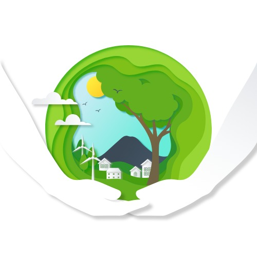

El Papa Francisco en su Encíclica, Laudato Sí, VII apartado, "La mirada de Jesús" punto No. 98, nos dice: 98. Jesús vivía en armonía plena con la creación, y los demás se asombraban: "¿Quién es este, que hasta el viento y el mar le obedecen" (Mt 8,27). No aparecía como un asceta separado del mundo o enemigo de las cosas agradables de la vida.
Siguiendo el ejemplo de Jesús, vivamos en armonía y cuidemos nuestra "Casa Común".